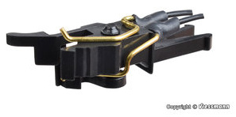
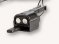
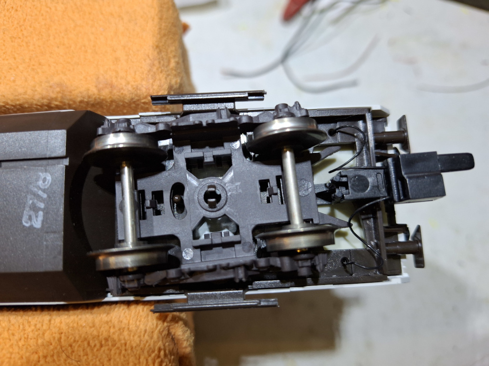
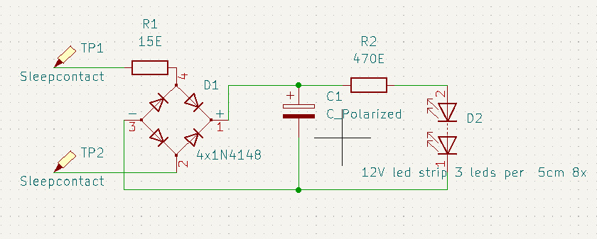
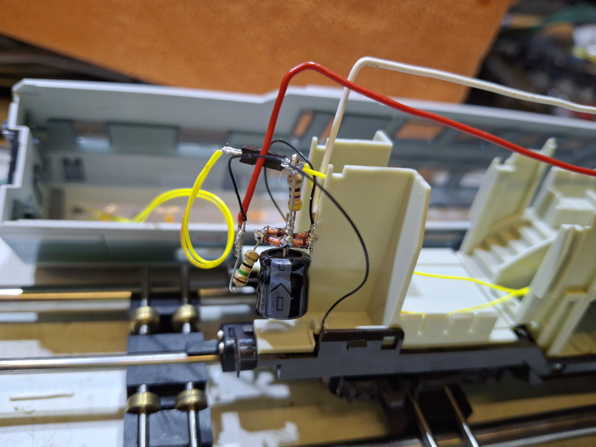
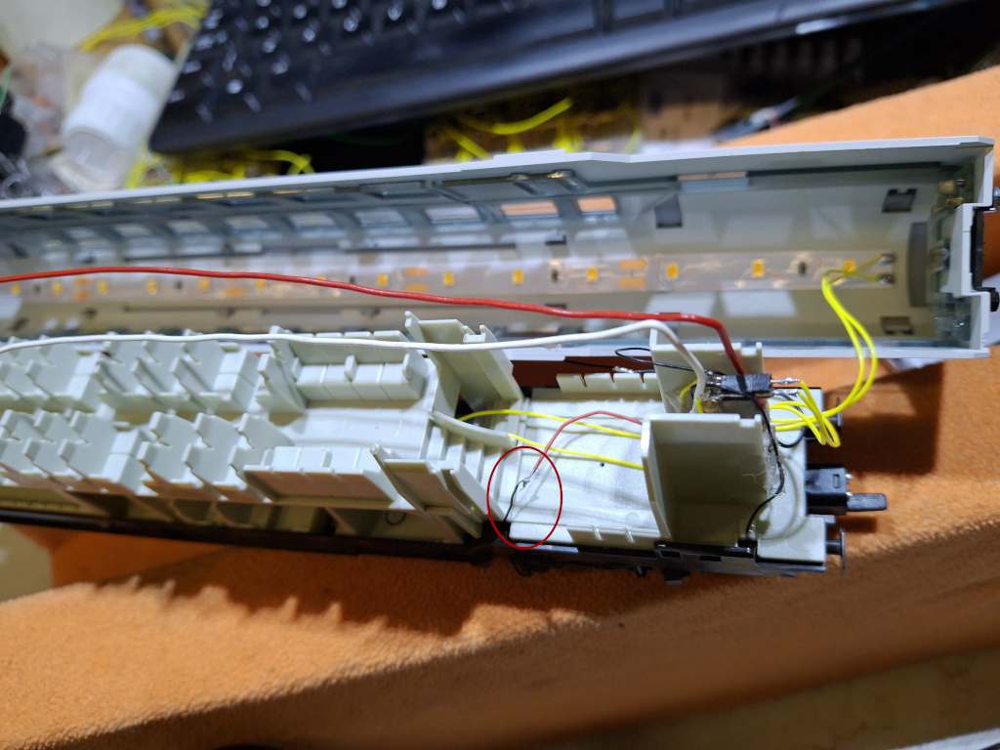
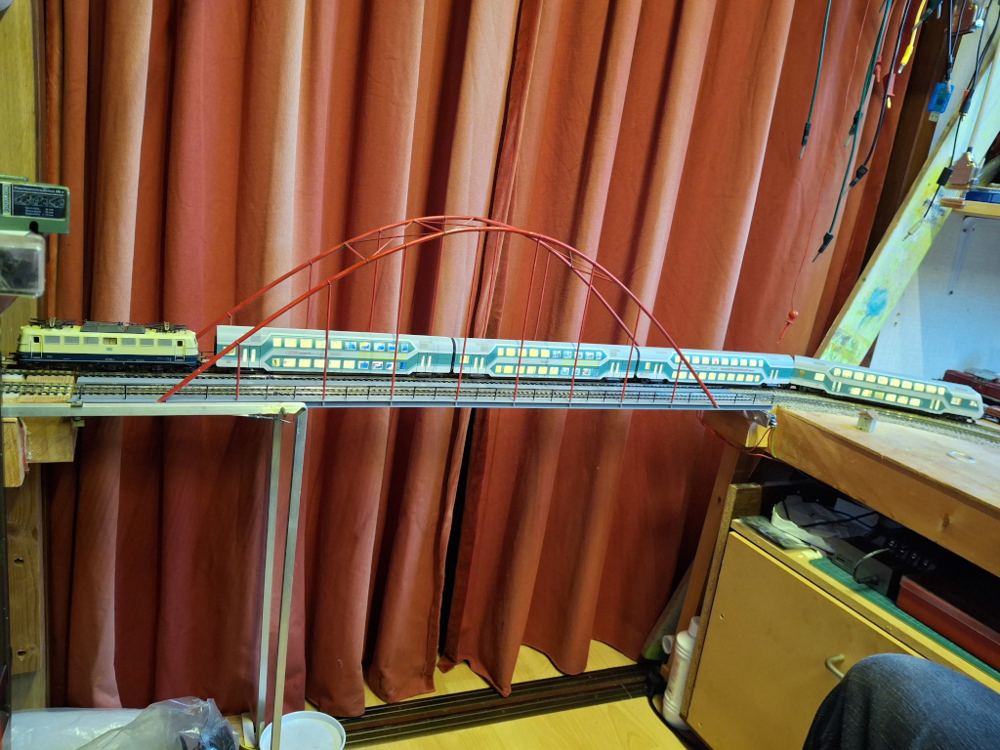
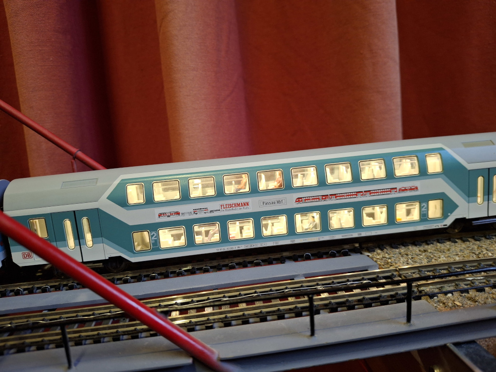
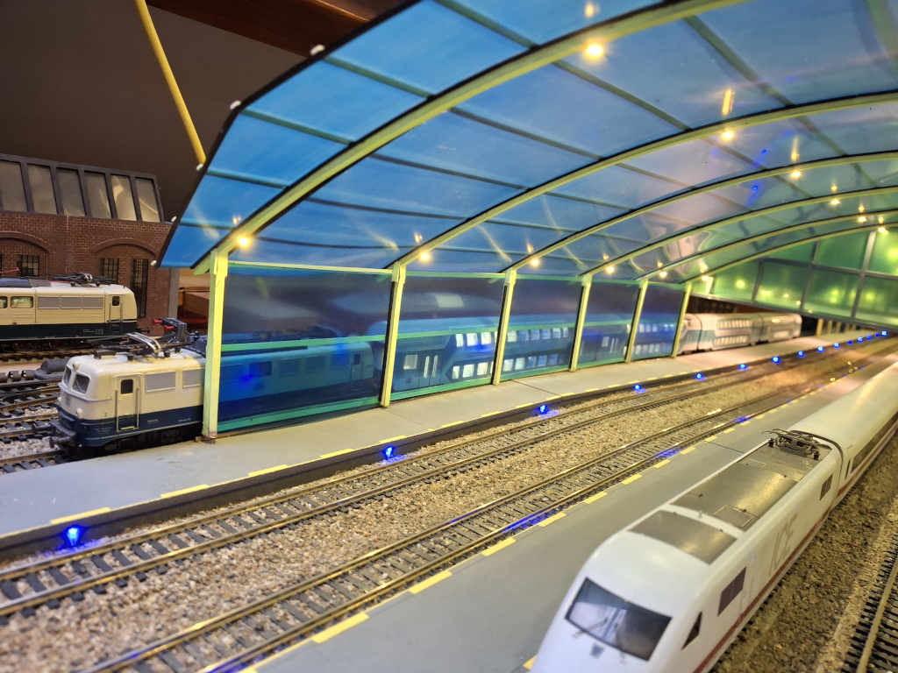

Om wagons van verlichting te voorzien kan je elke wagon voorzien
sleep contacten. Het nadeel is wel het voor de locomotief wel zwaarder
wordt (wrijving sleep contacten). Als je dit niet wil moet je 1 wagon
voorzien van sleep contacten en de wagons koppelen met stroomvoerende
koppelingen.
Als experiment heb ik 1 set stroomvoerende koppeling van viesmann (5048)
gekocht.

Dit was niet zo'n succes want de draadjes zijn toch vrij dik
waardoor de koppeling duidelijk meer weerstand heeft bij zijwaardse bewegingen.
Ik heb dunner draad gebruikt en dan werkt het wel. Ik merkte wel dat de pennetjes
nogal snel verbuigen zodat je die weer moet afstellen en dat is een gepruts.
Voordeel is wel dat je nog steeds de wagon kan loskoppelen met een ontkoppelaar
als je dat gebruikt. Ik rangeer niet met mijn personen treinen dus is het ontkoppelen
geen eis.
Wat ik ook lastig vind is dat de koppeling electrisch wisselt van de linker kant
naar de rechter kant.
Mijn keuze zijn de Almrose magnetische koppelingen.

Ze zijn sterk genoeg om een
aantal wagons door te voeren. Met de hand koppelen/ontkoppelen is lekker makkelijk
gewoon even duwen of trekken. De aansluit draadjes zijn lekker dun en dus flexibel.
Ik heb ze met een klein lusje onder de wagon hangen zodat de koppeling zijdelings
kan bewegen.

O ja pasop als je het draaistel wil verwijderen dan moet je die kleine pennetjes
indrukken en het draaistel eraf trekken. Helaas breken die pennetjes nogal snel af.
De standaard sleep contacten van Fleischmann gebruiken een sleper om contact te
maken met de twee stalen strips in de onderkant van de wagon. Deze slepers branden
snel in het metaal en na verloop van tijd is er geen contact meer. Ik heb daarom
dan ook draadjes aan de sleep contacten gesoldeerd en via een klein gaatje naar
binnen gevoerd. Dit zien we later nog terug.
Hier is het schema van de schakeling.

Ik heb voor de doubledekker wagons 1 led strip van 5 secties gebruikt in het dak
en 1 strip van 3 secties in de onder verdieping. Totaal 8 secties met een 470 Ohm
weerstand de spanning van 15V naar iets lager dan 12V. De leds hoeven niet op vol
vermogen te branden. Voor gewone wagons is een strip van 5 secties voldoende. Mogelijk
dan een weerstand van 820 Ohm gebruiken.

Het is een beetje vrij zwevende electronica maar het past netjes tussen de schotten
zodat je er niet veel van ziet. Met wat hotglue kan je het een beetje body geven zodat
de componenten iets beschermd zijn.
Hier zie je de schakeling tussen de schotten zitten.

Omcirkeld in rood zie je ook het draadje wat van het draaistel afkomt. Hiermee overbrug je de
sleepcontacten die aan de onderkant van het draaistel zitten.
Eindelijk alle 4 de wagons voorzien van verlichting.

En als je goed kijkt zie je dat dit wagon ook bewoont is :)

De trein is gestopt voor een rood licht bij het station omdat de achterligende blokken
spanning houden blijft de wagonverlichting ook branden. De trein zal pas weer gaan
rijden als het blok vrij is en de seinen op groen staan.

Ga terug